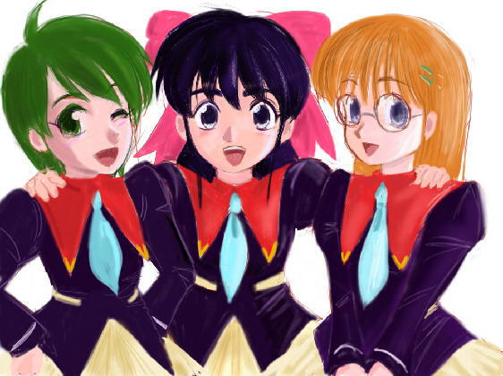

このお話は「らいか大作戦１２」の続編になります。未読の方はこちらから「らいか大作戦１２」を先にご覧ください。
人気がほとんど無い公園だが、頼香と果穂の二人に声をかける者がいた。
「お嬢さん方、仲のいい事だな。帰らなくていいのか」
「スピナー。こんな所でどうした。何か用なのか」
頼香の問いには答えず、紙袋を差し出すスピナー。
中には石焼き芋が四本。どうやら近くに芋売りの軽トラックが通っていたようだ。
怪訝そうな顔で受け取る頼香だが、スピナーは事も無げに答える。
「差し入れだ。今日は髪の短いお嬢さんはいないんだな」
「来栖なら先に帰ったぞ。こんな事するなんてどういう風の吹き回しだ」
「他意はない。お前達が食べなくても私は食べるぞ」
袋から一つ焼き芋を取り出して、食べ始めるスピナー。
頼香も袋から二つ取り出して、果穂に一つ手渡す。
真ん中から折って一口食べてみると、ほくほくとした甘さが美味しい。
「ふむ、こういう物は女性の体だと美味しく感じるな」
「その点は同感ですね」
「ああ、異議なし」
焼き芋の熱さと、何となくの気まずさから、しばらく無言で食べている三人。
食べ終わった頃を見計らって、スピナーがコートのポケットからボール状の物を取り出す。
「お嬢さん方に渡したい物がある」
「シーリングカプセル？」
「そうだ。対シェンナ用に調整してある」
頼香が受け取ってカプセルを眺めてみるが、今までの物と変わった所はない。
果穂に渡すと、果穂は携帯スキャナでカプセルの表面をスキャンしていく。
ほう、と驚いたような顔をする果穂。
「専用とはいえ、よくここまで高密度化しましたね」
「うむ。汎用性は犠牲にした。それでもシェンナをシーリングするには不十分だ」
「そのようですね。私達も固定式のシーリングシステムでやっといくかどうかです」
このところ、頼香達はシェンナをシーリングするために、ホロデッキでのシミュレーションを行っていた。
ポイントは相手を弱体化させて動きを封じる事。
システムの一基を背負って戦闘している頼香にとっては、結構な負担になっていた。
「このカプセルと果穂のシステムを同時に使ったらどうだ？」
「カプセルを切り札に使いましょう。いい方法を考えつきました」
頼香の提案に、果穂は早速新しい方法を考えついたようである。
「早速、さんこうでシミュレーションをしてみます」
「ああ、頼むぞ。でもスピナー、本当にどういう風の吹き回しだ？」
頼香は果穂からスピナーに向き直って尋ねる。
スピナーは腕組みをして、どう説明したものかと考えているようだった。
作：かわねぎ
画：ステレオ 様
やがて、腕組みを解いて話し始めるスピナー。
「お嬢さん方の力を借りたい」
「それはいいんだが……それこそどういう風の吹き回しか聞きたいな」
今までスピナーは頼香達と手を組むのを頑なに拒否していたはずだ。
それなのに今は協力を要請する姿勢を見せ、あまつさえ自分の手の内を晒している。
頼香が疑問に思うのも当然といえば当然だ。
「先日ユキが……お嬢さん方は祐樹といっているのか……私の所に来た」
「ああ、知っている」
「だからという訳ではないが、私にも考えるところがあってな」
そこで話を区切るスピナー。
祐樹がスピナーの説得をしている事はもちろん頼香は知っていた。
なんとか連合との交渉テーブルに着かせる事ができれば、無用な衝突は避けられるのだ。
頼香の本心としては、説得に応じて欲しいと思っている。
スピナーの身柄よりも「共犯者」たる祐樹の身柄を考えて、という事情があったりもするのだが。
「自分の手には余ると判断した。それだけだ」
「そうか。真意はともかく、協力要請には応じる」
「感謝する」
「約束だったからな」
もちろん頼香もスピナーが何か腹に一物あるのではないかと疑っている。
だが、とりあえずは当面の目的は一致している。
頼香達にしても対処する相手を減らしておく方が有利といえるのだ。
スピナーはそうした頼香達の反応は織り込み済みのようである。
頼香への話は終わりとばかりに、果穂に話しかける。
「そちらのお嬢さん、それの準備に何日かかる」
「え、そうですね。２日いただけますか。私達のシステムとの調整もありますので」
「うむ、それ位の猶予なら構わない」
「しかし、どうやってシェンナをおびき出すんだ」
「奴が誰を狙っているかは自明だろう」
「自分から囮になるつもりですか」
果穂の言葉に対して、黙って頷くスピナー。
頼香達を信頼している表れとも言えよう。
「お嬢さん達の力を見込んでの事だ」
「そうまで言われれば手の抜きようが無いな」
「ですが、完璧な保証はできませんよ」
「それは仕方ない事だろう。全力を尽くしてもらえばそれでいい」
ある意味、スピナーの言い方も尊大なのだが、頼香と果穂もその通りだと思っている。
それ故、２日後に向けて頷く二人であった。
翌日。給食も終わって昼休み。
校庭に遊びに行く児童達、教室で集まっている児童達。
そんなざわめきの中、頼香達三人娘も集まってお喋りに興じている。
「絶対罠だよ。罠に決まってるよ」
「頼香さんには頼香さんなりの考えがあるんですから」
どうやら話題は昨日のスピナーとの一件らしい。
頼香や果穂は中身が大人だけあって、ある程度割り切って納得する事も出来る。
だが、来栖にしてみればスピナーの提案には素直に納得がいかないのである。
「そうは言っても明日だよね。今までの練習はどうなるの」
「基本は今までと同じで行くつもりだ。スピナーのカプセルは最後に使う」
「切り札があの女の奴ってのも面白くないね」
「まあそう言うな。スピナーが俺たちを利用するなら、俺たちだって利用すればいいんだからさ」
「それって利用されてるって事じゃない」
「確かに来栖さんの言う通りなんですけど。ですけど頼香さんの決断も分かってください」
「う〜ん……」
来栖も頼香と果穂に本気で反対をしている訳ではない。
今まで手こずってきた相手だけに、どうしても一言多くなってしまうのだった。
「頼香ちゃんと果穂ちゃんがそう言うならいいけどね」
「今日の放課後、ホロデッキで最後の仕上げをします」
「いよいよ最終決戦だね」
自分で言ったその言葉に、わずかに身を引き締める来栖。
日常では使わない様な、マンガやアニメなどでしか縁のない言葉。
それでもこれで最後となると、否応なしに気持ちも引き締まる物なのだろう。
「ああ、そう言う事だな。よろしく頼むぜ、来栖、果穂」
「はい。頼香さんと来栖さんがメインなんですから頑張ってくださいね」
「うん、私も頑張るからね」
頼香の言葉に応える果穂と来栖。
来栖もやる気満々である。
スカートのポケットから簡易型オーラスティックを取り出して、さっと横に薙ぐ。
任せて、と言わんばかりの勢いだ。
「あ、こら、学校でそんなもん振り回すなよ」
「オーラ展開してないもん」
「だからと言って……誰かに見られたらどうするんだよ」
「でもオーラブレードには見えないよね」
「まあ、確かにリップスティックに見えるように作りましたけどね」
「でも、やっぱり止めておけよ。頑張るのは放課後と明日にしておけな」
慌てて来栖に注意する頼香だが、果穂の言う通り、剣呑な代物を振り回しているようには見えない。
だから頼香の注意も歯切れが悪くなってしまうのだった。
さんこうでのホロデッキシミュレーションも終わり、マンションでの夕食。
今日の夕食の片付けは、頼香が洗い物、果穂がテーブル周りという分担だ。
鼻歌交じりに食器を洗っていく頼香。
果穂はその後ろでテーブルを拭いているのだが、ふと足元に紙袋があるのに気が付く。
「おや、これは……ゆーきさんの忘れ物でしょうか。頼香さん、ご存じないですか」
「あ、それゆーきに渡した奴だ。後で届けるか」
「頼香さん、今行って来たらどうでしょう」
「まだ洗い物残ってるぞ」
「あと少しでしょうから私がやっておきますよ。頼香さんは届けてきてください」
頼香は気遣ってくれている果穂の態度に素直に感謝して、食器洗いを交代する。
「すまないな、果穂。すぐ戻るから……」
「いいんですよ。一休みしてきてもよろしいですからね」
微笑みながら紙袋を頼香に手渡す果穂。
しっかりと受け取って、急いで廊下に飛び出す頼香だった。
祐樹の部屋の前に来ると、チャイムを押して祐樹を呼び出す。
『ピンポ〜ン♪』
すぐにインターホンから答えがある。
『飯田です』
「あ、俺」
『今開けるよ』
誰とも言っていないのに声だけで誰だか分かる二人。
早速ガチャリとドアの鍵が外れる音がして、祐樹が顔を出す。
その鼻先に紙袋を突き付ける頼香。
「わ、頼香、どうしたの？」
「ゆーき、これ忘れてるぞ」
「ありがとう。うっかり忘れちゃったよ。さ、上がって」
「いいのか。遅いのに悪いな」
悪いとは言いながらも、内心嬉しい頼香。
早速祐樹の部屋のリビングルームのソファに腰を下ろす。
いわば頼香の「指定席」だ。祐樹も頼香の隣に腰を下ろす。
さりげなく祐樹に寄り添うように姿勢を直す頼香。
「頼香、わざわざ届けてくれてありがとう」
「いいって。それにしても、ゆーきにしては忘れ物なんて珍しいな」
「いろいろ考え事があったからね。頼香も同じかな」
「……ああ」
祐樹の言葉に目を伏せがちに応える頼香。
このところ上の空になってしまう事がある祐樹。そして頼香。
原因は二人とも分かっている。同じ理由だ。
スピナーと協力する事で、最後のイーター、シェンナを捕まえる目途がついた頼香達。
それはすなわち任務の終了、テランへの帰還を意味する。
「来栖や果穂と別れなきゃならないんだよな……」
そして次の任務の拝命。
おそらくテランを離れるため、祐樹との別れも控えているのだ。
場合にによっては、もけやからめるとも別任務になるかもしれない。
そして戸増頼之として、戸増頼香として築いてきた生活との別れ。
ライカのふりをしている頼香にとって、今回の任務完了は失う物が多すぎるのだ。
「ゆーき、こうしていられるのも、あと少しだな」
「そうだね」
「……俺が連合の軍人じゃなかったら、こんな思いをしなくて済むんだよな……」
「でも、頼香が連合士官だったから、こうしていられるんだよ」
祐樹の言葉に頼香は軽く頷く。
確かに最初、祐樹は頼香が連合の士官である事を知って近づいたのだった。
「テラン人同士、こんな辺境の星で知り合う偶然なんてないよ」
「偶然だって後から思えば必然かもしれないな。でも……でも……」
頼香は顔を伏せて、しっかり両手を握り締めている。
何か言葉に詰まっているような、いつもの頼香らしくない態度だった。
「……ゆーきだけじゃない……」
「……」
「果穂だって、来栖だって。これ以上俺は何を失わなきゃなんないんだよ！」
祐樹の腕を掴む頼香。
自然とその手に力がこもる。
「任務が終われば地球を離れて……俺が全部背負わなきゃならないのか？」
「でも士官だから。それは頼香が選んだ道だよね」
「分かってるよ！ だけど……だけど……」
祐樹の手がそっと頼香の髪を撫で、手元に抱き寄せる。
頼香もそのまま身を寄せる。
ほのかに伝わる暖かさ。
もうすぐ離ればなれになってしまう。
そう思うと頼香の胸につかえている気持ちが抑えきれなくなってしまったのだった。
「普通の女の子に戻ったっていいだろ！ 俺は子供なんだから。１１歳の女の子なんだから！」
涙声になりつつ、祐樹の胸に顔を埋める頼香。
「……これ以上誰とも別れたくないよ……」
そんな頼香の言葉を、祐樹は何も言わずに受け止めてくれる。
頭を撫でる祐樹の手のひらから優しさが伝わってくる。
「今は大人でなくてもいいんだよ、頼香」
小声でつぶやく祐樹の声に、安心して身を預ける頼香だった。
祐樹の部屋から自分の部屋に戻る頼香。
自分の気持ちを落ち着けるために、あれからだいぶ時間を費やしてしまった。
「ただいま。悪いな、片付けやってもらって」
「お帰りなさい。お風呂沸いていますよ。どうぞ入ってください」
夕食の片付けを済ませた果穂が出迎えてくれる。
既にお風呂の準備までしてくれていたらしい。
「果穂は入ったのか？」
「いえ、まだなんです。ちょうど良いタイミングですから、頼香さんから入ってください」
「何か悪いな」
果穂に感謝しつつ、お風呂に入る準備をする頼香。
タオル類と替えの下着とパジャマを用意して、脱衣所に入る。
髪をほどく仕草も、もう手慣れた物だ。
ぱさりと長い髪が背中をくすぐる。
かけ湯をして、湯船に身体を沈めると、つい安堵のため息が出てくるのだった。
「ふぅ……」
ここ数日間で、様々な動きがあった。
それも明日まで、と思うと複雑な思いがこみ上げてくるものだ。
シェンナとの決戦が明日ならば、惑星連合司令部から伝えられている地球滞在期限も明日まで。
ようやく慣れてきた戸増頼香としての生活にもピリオドを打たなくてはならないのだ。
そんな事を考えている頼香だったが、ドア越しの果穂の声がふっと現実に戻してくれる。
『頼香さん』
「ん？ なんだ？」
『湯加減いかがですか？」
「ああ、ちょうどいいよ」
果穂が気遣って、頼香に尋ねに来たのだ。
手でお湯をすくうように、肩に湯をかけながら答える頼香。
『いよいよ……明日ですね』
「ああ。頑張ろうな」
『からめるさんから聞きましたよ。明日、さんこうで地球を離れるのですね』
「……黙っているつもりだったんだが……知ってたか」
『水くさいですよ。急に旅立つ事で私や来栖さんに寂しさを感じさせないつもりなのでしょう』
「……分かっていたか……果穂はお見通しって訳か……」
『こう見えても、頼香さんより人生経験は長いですからね』
ドア越しにも苦笑をしている頼香の口調は伝わる物らしい。
果穂は果穂でそれを真っ正面から受けてくれている。
どうやら果穂の気遣いはもっと深いレベルだったようである。
『別れの苦しさ、寂しさも一緒に分かち合いましょう。私も来栖さんも、仲間なんですから』
「仲間、か」
『ええ。かけがえの無い物だと思います』
「だが、しばらく会えなくなってしまうぞ」
『連合風に言えば、私達三人の絆は「ワープ１０の速度で繋がって」います』
ワープ１０。数式上無限大速の数値。
移動時間が無である故に、宇宙の何処へでも同時に存在できる速度。
もちろん現実にはあり得ず、比喩表現の中にだけ表れる数値だ。
いつでも、そばにいるよ。
「そういう表現だったな……ついでに言うなら、もけとからめるも入れといてくれよ」
『ええ、そうですね。私達５人です』
心の中で、祐樹の事も付け加える頼香。
全く離ればなれになる訳ではない。
現実的にも何日か費やせば、果穂や来栖に会いに来る事だって出来るのだ。
『いつでも、そばにいると思ってください。今も……』
「ああ、約束する……って、おい！！」
そう答える頼香だったが、途中で言葉が叱咤の声に変わり、ザバンと湯船から勢いよく立ち上がる。
風呂場の扉をガラリと開けて、果穂が入ってきたからだ。
お風呂場だけに、もちろん裸。
「果穂、どういうつもりだ」
「ですから、いつもそばにいるということでして」
「だからと言って、一緒に風呂に入るなんて言った覚えはない！」
「頼香さんともこれで最後なんですから、いいじゃないですか」
慌てる頼香に対して、何の悪びれもなく湯船に入ろうとする果穂。
頼香は呆れて前を隠すのも忘れていたり。
「さ、一緒に入りましょうね、頼香さん」
「お、おい！……まったく……」
憮然としながら湯船に入り直す頼香だが、本心は嫌だという訳ではない。
狭い湯船で向き合うと、お互いの距離も心の距離も近くなるのだろうか。
頼香も自分の本心を素直に果穂に聞いてもらえそうだ。
別の下心が含まれているとは言え、果穂も頼香の事を気遣ってくれているのだろう。
「なぁ、果穂。俺さ……」
ちょうどその頃、マンションのリビングに転送の光が現れる。来栖だ。
転送の光が弱まると来栖も周りの景色を認識したのか、きょろきょろと見回す。
「あれ、果穂ちゃんと頼香ちゃんは？」
「今お風呂に入っているところでちゅ」
「二人一緒にな」
もけとからめるがそう答えると、おそらく風呂場の方だろう。頼香と果穂の声が聞こえてくる。
『うわ、果穂！ どこ触ってる！！』
『偶然ですよ、偶然』
『お返しだ！』
『きゃぁ』
中で何が行われているのかは知らないが、来栖は羨ましそうにもけとからめるに話しかける。
「頼香ちゃんと果穂ちゃん、楽しそうだね〜」
「楽しいのは果穂だけだと思うな……」
「二人ともそろそろ出てくるんじゃないでちゅか？」
もけの言葉通り、しばらくしてから頼香と果穂が連れ立ってリビングに戻ってきた。
頼香の長い髪はまだ乾ききっていない。
そんなパジャマ姿の二人を迎える来栖。
「頼香ちゃん、果穂ちゃん、こんばんは〜」
その姿を認めた頼香は少々驚き顔だ。
「あれ、来栖？ どうしたんだ」
「ごめんなさい、お待たせしてしまって。来栖さんは私が呼んだんですよ」
「うん、果穂ちゃんからお泊まりに来ないかって言われてたんだ」
「え、いきなり？」
「頼香ちゃん、迷惑だった？」
「いや、そんな事ないさ」
そう言いながら、冷蔵庫から牛乳を取り出してコップに注ぐ頼香。
果穂と来栖の分も分けて、それぞれに勧める。
風呂上がりの一杯は格別だ。
ごくごくと一気に飲み干してしまう。
「それじゃ、この前みたく三人で一緒に寝ようぜ」
「うん」
「それなら、もう準備は出来ていますよ。私の部屋にお布団敷いておきました」
どうやら果穂が既に一通りお膳立てしているようだった。
だが、来栖はちょっと首をかしげる。
「もう眠っちゃうの？ まだ早いのに」
「いえ、せっかくですからお布団に入りながらお喋りはどうかと思いまして」
「それもいいね。じゃあ、私もパジャマに着替えるね」
「ああ、俺も構わないぞ」
「じゃあ、決まりですね」
それでは、と自分の部屋に来栖と頼香を迎え入れる果穂。
来栖はテーブルの上にいるもけとからめるをさっとすくい上げる。
「もけちゃんとからめるちゃんも一緒にね」
「僕たちもいいのか？」
「じゃあ、一緒にお喋りするでちゅか」
こうして、頼香達三人娘とプレラット人２人のパジャマパーティーが始まった。
布団は頼香を真ん中に両脇が果穂と来栖の配置だ。
しばらくきゃいきゃいと話に花を咲かせる三人娘＋ハム２匹。
こんな所は確かに年相応の少女といえよう。
他愛もない話が続くうち、三人とも眠くなってきてしまった。
それでは、ということで、消灯となった。
「ね、頼香ちゃん」
「ん？」
「明日、行っちゃうんだね。テランに」
「ああ……」
三人がお喋りしている間、敢えて触れなかったことだ。
触れてしまえば終わりになってしまう……そんな事を思ってしまい、言い出せなかった。
だが、意を決して尋ねる来栖。
「寂しくなるね。けど、また会えるよね。会いに来てよね」
「ああ。休みにはなるべく来てみるつもりさ。ええと、２回に１回な」
「どうして半分なの？」
「半分はゆーきさんの所ですよ。そうですよね、頼香さん」
「そっかぁ」
果穂の解説に納得する来栖と顔を赤らめる頼香。
消灯してしまっては顔色の変化など見えないのだが、うろたえている事は果穂にも来栖にも筒抜けだ。
頼香がどうやって誤魔化そうかと思っていると、幸いな事に来栖が話題を変えてきてくれた。
「ねえ、頼香ちゃん、こういう事できない？」
「ん？」
「私や果穂ちゃんがテランに行くの」
「それはいい考えですね。でも現実的に可能でしょうか。もけさん、からめるさん」
「なるほどな。どうなんだ？」
来栖の提案をなるほど、と受け取る頼香と果穂。
本来連合の士官ならばその答え位は知っているはずなのだが、あいにく頼香は中身は地球人。
疑問をそのままもけとからめるに振る。
「そうでちゅね。連合市民だったらテランとＴＳ９を自由に行き来できまちゅね」
「けど地球は宇宙艦の定期航路からは外れているからな。地球の技術じゃＴＳ９にすら行けないぞ」
「宇宙軍の方で地球に用事がない限り無理に近いでちゅね」
至極もっともな事。
惑星連合と地球の交流は非公式で限定されているものなのだ。
そんな事情を知らない来栖はなおも食い下がる。
「じゃあ、頼香ちゃんみたいに私達が連合の市民になったり、将来軍に入ったりできないの？」
「無茶言うなよ。来栖たちはあくまで現地の協力員だからな。僕たちの裁量ではこれが限度だな」
「そうでちゅね。僕たちより上官が決めないと無理でちゅね」
「そうなんだ……頼香ちゃんを待つしかないんだ……」
もけとからめるの言葉にわずかに落胆する来栖。
無理な事とは自分でも分かっているのだろうが、少しでも頼香と会う手段があればと思っているのだ。
そんな来栖の手を布団の中でそっと握る頼香。
「約束するよ。ちゃんと二人に会いに来るって」
「２回に１回ね」
「おい、わざわざそれ言わなくても……」
「私にも約束してくださいね」
「ああ」
果穂も頼香の手を握る。
頼香は二人の手のぬくもりを感じながら、いつしか眠りに落ちていった。
頼香達三人の寝息がすやすやと聞こえる。
さすがに身体は小学生。すぐに眠ってしまったらしい。
そんな三人を見守るもけとからめる。
「ふう、お子様達は寝ちゃったか」
「そうでちゅね。果穂ちゃんと来栖ちゃんと別れるのも辛いでちゅね」
「ああ、僕だってそう思う」
頼香とはライカ・フレイクスとしてこれからも一緒に仕事をする事が出来る。
だが、果穂と来栖とはほとんど会う機会もなくなってしまうだろう。
「やっぱり連合に来られる様にした方がいいでちゅかね……」
「市民権は？ 誰が身元保証するんだ？」
「今回の任務で一応の評価が得られるでちゅ。市民権も軍籍も大丈夫でちゅよ」
もけの考えにからめるが現実的な反論をする。
そうは言っても、からめるだって果穂と来栖の市民権取得に反対ではない。
まあ、自分を含めて面倒な手続きがあるだけだ。
それに宇宙軍からも推薦を与える事が出来るのでスムーズに事は運ぶかもしれない。
「ちょっと待て。軍籍って、未成年に軍籍は与えられないぞ」
「果穂ちゃんや来栖ちゃんにも例の条項を適用するでちゅ」
「頼香と同じく成人扱いか……」
「任務に協力させておいて、いまさら子供でちた、さようなら、というのはないでちゅよ」
もけのいう条項というのは、言ってみればライカ・フレイクスのために作られたもの。
そもそも連合では未成年者に軍籍を与える事はしていない。
そのため、ライカのアカデミー入学時、テラン政府では文武両方から様々な議論が巻き起こった。
卒業後、子供を軍務に就かせるのか、と。
議論の末、テラン基本法に次の例外条項が盛り込まれたのである。
『特に指定された未成年は、成年としての権利・義務を負うと共に、未成年に対する一切の保護を放棄させる』
ある意味危険な法律であるのだが、軍の周到な根回しの結果、議会承認されて今に至るのである。
その結果、１１歳のライカは成人扱いとなり、軍に任官する事が出来たのだ。
それを果穂と来栖にも適用させようと言うのがもけの目論見である。
「功績から言って伍長か軍曹あたりかな。どのみち宇宙艦は自由に動かせないけどな」
「最高でも曹長でちゅね。部外者じゃなければ自由にさんこうにも乗れるでちゅ」
申請が通るかは分からない。
だが、もけもからめるも、果穂と来栖の事が気になってしまうのだった。
一夜明けて。御越山中腹のキャンプ場。
飛行タイプの新オーラスティックを片手に、戦闘服に身を包む頼香達三人娘。
頼香はシーリングシステムの一基を背負っている。
この二日間で果穂が重力制御機能を組み込み、頼香が攻撃に専念できるように改良した物だ。
その名も「シーリングフライヤー」。
「お嬢さん方も揃ったようだな。準備はいいのか」
先に来ていたスピナーが三人に声をかける。
手元のシーリングシステムの操作パネルを確認しながら果穂が答える。
「はい。固定側のシステムをここの他３カ所に設置しました」
「でも、上手く誘い込めるの？」
「最後のシーリングの瞬間だけ誘い込めればいいさ」
「でもシェンナがここに来るって分かってるの？」
当然の疑問を口に出す来栖。
それには何を言っているとばかりにスピナーが答える。
「シェンナは私を狙ってくると言っただろう」
「でもどこにいるか分かんないんじゃ、ダメじゃない」
「イーター種族が仲間を探知するときには、固有の素粒子の波長を掴むのが特徴だ」
そう言ってポケットから直径１５ｃｍ程度の円盤状の物を取り出すスピナー。
何らかの発信器のようでもある。
「私自身、その素粒子を有しているが、強度的には不足だろう」
「それで強度のシグナルを発信してこちらに注意を向ける訳ですか」
発信器を一目見てスピナーの意図を理解する果穂。
この辺は技術者のセンスの表れだろう。
それを聞いていた来栖は少々あきれ顔。
「あからさまに罠って言ってるよね、それ……」
「確かにな。だがこちらから攻められない以上、待つ事も必要なんだ」
「上手く来ればいいけどね」
純粋な子供である来栖の方が猜疑心があるところが面白いかもしれない。
敢えて見え透いた罠を張る事に対して、疑いを持つのも少女の素直さ故だろう。
「果穂、監視は任せる」
「はい。イーター探知機は最大に働かせていますよ」
「いつ来るか分からないのを待つのって、緊張するね」
「ああ、気を抜けないからな」
自然体ながらも、いつでもオーラブレードを展開できるように構える頼香。
来栖はオーラスティックを後ろ手に持ちながら、始まりを今かと待ちかまえている。
林の中の広場に佇む頼香達。
静けさが緊張を大きい物へと膨らませていく。
「……ん……」
ホロデッキでのシミュレーションは何度も繰り返した。
だが実戦は全く違う緊張感。
今はこれからの戦いだけを考えればいい。
友人達との別れや地球との別れは、このとき頼香の意識から遠ざかっていた。
「来たな」
スピナーの呟きとも取れる一言を耳にして、果穂は操作パネルから顔を上げる。
軽い驚きが表情に表れている。
「まだレーダーにも捕捉していませんが……」
「じきに分かる」
「あ、補足しました！ ２時の方向、上空からまっすぐこちらに接近してきます。シェンナさんです」
果穂の言葉に、オーラスティックを構え直す頼香。
「速度を落とさず一直線か」
「はい。このままですと衝突は２０秒後です」
「一撃離脱のつもりか。来栖、頼む」
「うん」
来栖はすっと前に出て、オーラスティックを胸の前で真横に構える。
天空の一点を見つめて、ゆっくりと息を吸い込み、自分のオーラを高めていく。
「来栖、今だ！」
「オーラシールド展開！」
念をこめて来栖は前面にオーラの壁を作り出す。
来栖が本来持つの力が強い上に、オーラスティックによって増幅されたオーラ。
これを打ち破るのはシェンナと言えども並大抵の事ではない。
勢いに乗ってオーラシールドに体当たりをするシェンナ。
「く……」
「うぁ……抑えられないよ……」
両足でしっかりと地面を踏みしめていても、徐々に押されてしまう来栖。
こうなると純粋な力比べになるのだが……
「来栖さん！」
「果穂ちゃん、お願い！」
来栖の脇でオーラスティックを銃のように構える果穂。
オーラの光が迸る瞬間、来栖がオーラシールドを解除する。
来栖のシールドと対峙していたシェンナは、別な種類の攻撃に一瞬戸惑う。
「足止めにしかならなくても構いません！」
再び来栖がシールドを張る直前、頼香が地面を蹴って飛び出す。
手にはオーラブレードを展開して。
「せぇぇい！」
頼香達の連係攻撃に対処が遅れてしまったシェンナ。
辛うじて頼香のオーラブレードを素粒子のシールド……自分の「翼」で受け止める。
「あなた達もなかなか……やりますね」
「……まあな……」
「あくまで邪魔しますか……」
「お前が……これ以上強化されても……困るからな……」
オーラブレードを押す頼香と「翼」で押し返すシェンナ。
力の均衡が生まれる。
「あなたに用はありませんよ。博士だけです」
「そうはいかない。俺たちはお前をシーリングしなくてはな」
「そう上手くいきますか。邪魔だてはさせませんよ」
シェンナも手に光の刃を生じさせ、頼香と相対するのであった。
「この体勢だと不利ですね……」
頼香との斬り結びを何とかかわすと、上空に逃れようとするシェンナ。
「逃がすか！」
頼香もオーラブレードを手にしたまま、背中のシーリングフライヤーを起動させて空中に舞い上がる。
空中で刃を交える頼香とシェンナ。
今度はホロシミュレーションなどではない。
文字通り真剣勝負。
お互い互角の戦いを繰り広げていた。
「埒があきませんね」
「お互いにな」
「ならばあなたの動きを封じさせてもらいます」
さっと素粒子の翼を広げるシェンナ。そして自分の身を翼で包むようにして隠れる。
「動きが緩慢になればこっちのものだ！」
シェンナの翼をオーラブレードで貫こうとする頼香。ブレードの輝きも増している。
「もらった！」
翼を貫くブレード。だが、手応えはない。翼の羽根が頼香の周りに散らばる。
素粒子による目くらまし。
「何？」
「後ろです。飛ぶのに翼はいりません……あなたと違って」
頼香が振り向くよりも早く、シェンナが頼香の背中を、背負ったシーリングフライヤーを破壊していた。
「しまった！」
自分の迂闊さを悔やみながらも、オーラブレードを飛行モードに切り替える頼香。
何も空中を飛び回る手段が無くなった訳ではない。
「まだだ。たかがフライヤーをやられただけだ！」
「だが機動力は落ちてるのではありませんか」
そう言い残して頼香の脇をすり抜け、地上へ向かって加速するシェンナ。
狙いは地上にいるスピナーのようだ。
シェンナの言うとおり、オーラスティックでの機動はどうしてもワンテンポ遅れてしまう物がある。
スティックにまたがって飛ぶ分には問題ないのだが、武器としてスティックを使いながらだと扱いが難しい。
頼香も後を追いながら通信バッチに呼びかける。
「来栖、果穂、そっちへ行った。足止めを頼む」
『そ、そんな事言われましても……』
『やってみるよ』
来栖はオーラスティックを握り、スピナーを守るようにしてシェンナを迎える。
シェンナは降下のスピードに乗せて来栖のオーラシールドに体当たりをかけてくる。
広くオーラシールドを展開していた来栖は、シールドを前方向だけに集中させる。
じりじりと押されていくが、脇で果穂がオーラスティックを構える。
「果穂ちゃん、いつでもいいよ」
「来栖さん、行きますよ……オーラフェイザー最大出力！」
「フェイザーは防げますよ。全くの無駄です」
果穂がオーラスティックをシェンナに向け、オーラの光を迸らせる。
当然オーラフェイザーの光をそらす事が出来ると踏んでいるシェンナ。
光を受け止めるように片手を伸ばし、周りに極小の強い重力を発生させる。
その重力により、光の進路をも曲げてしまう事が出来る。
当然フェイザーも偏向するはず。
だが、予想に反して、オーラの光の直撃を受けてしまった。
少なからずダメージを与えているようだ。
「ぐっ……フェイザーなら偏向するはずなのに……」
「こちらも改良は重ねています。男子三日会わざれば刮目して見よ、ですよ」
にっこりと笑ってその先を続ける。
「おっと、私は女の子でした。頼香さん、後お願いします！」
追いついた頼香がシェンナとスピナーの間に割って入る。
「よくやった、果穂。スピナーには近づけさせない」
「お嬢さん方相手なら空中の方が有利ですね」
「逃がすか！」
再び空中に舞うシェンナを追う頼香。
オーラスティックを飛行モードにして地面を蹴る。
そして頼香とシェンナの戦いが再び始まった。
空中で互角の戦いを演じる頼香とシェンナ。
一進一退、どちらも決め手に欠ける。
「はぁはぁ……」
頼香も休み無く切り結んでいるせいで、疲れが出てきている。
片や小学生女子、片やイーターの完全体。体力の差が現れてきているのだ。
頼香のオーラブレードが大振りになって来たところを、シェンナは見逃さず頼香の左肩に刃を突き立てる。
「そこです」
「くあぁぁっ！」
とっさに離れて左肩を押さえる頼香。
別に傷か付いた訳でも、血が流れる訳でもない。精神への攻撃で極度の疲労感が襲ってくるだけだ。
その「傷」を押さえるのは、頼香自身自覚していないが、自分のオーラで治すため。
「まずいな……」
そんな頼香の呟きが聞こえたのか、余裕の笑みを浮かべて向き直るシェンナ。
「これで、邪魔は排除させてもらいます」
だが、頼香もこれで終わるつもりはない。気力を振り絞ってオーラブレードを展開する。
切り結ぶ事はできなくても、差し違えることくらいは出来るはずだ。
オーラブレードを構え直して、シェンナの一撃を受けようとする瞬間、二人の間に頭上からオーラフェイザーが断続的に降り注ぐ。
「何？ 上だと？」
さっと離れるシェンナ。そこへ頼香の通信バッジに来栖の声が届く。
「頼香ちゃん、大丈夫？」
見上げると、来栖がオーラスティックにまたがって飛んでいる。
頼香とシェンナが切り結んでいる隙に、二人を見下ろす位置まで飛び上がっていたのだった。
そこで強度のオーラシールドを展開していた。
「来栖、ちょうどいい。アレをやるぞ」
「うん」
「「せーの！」」
頼香と来栖がタイミングを合わせ、かけ声と共にそれぞれの行動を取る。
「シールドブレイク！」
「オーラシールド！」
来栖がオーラシールドを破り、オーラの破片を二人に降り注がせる。
その瞬間、頼香は自分のオーラシールドで来栖のオーラ破片を防御していた。
結果、シェンナのみが来栖のオーラの破片を浴びる事になった。
頼香はこの方法が効果的である事を、身をもって体験している。
事実、並のオーラフェイザーよりもよほど強力だ。
身動きの取れなくなるシェンナ。
寸刻入れず、頼香がシェンナの懐に飛び込む。
対応がわずかに遅れたシェンナは頼香のオーラブレードを避けきれずに、その身に受ける事になった。
「うぐぁぁ！」
オーラブレードに渾身の力を、意識を込める頼香。
手応えは十分以上だ。
「今だ、果穂！」
『はい。シーリングシステム作動開始。イーター素粒子圧縮プロトコル。シーリング！』
果穂の操作で地上に置いた２基のシステム、果穂と来栖が背負っている各１基のシステムが動作し始める。
それぞれのシステムがイーター素粒子をシェンナの体から確実に取り込んでいく。
シェンナにしてみれば力を吸い取られているに等しい。
そして動きを止めている頼香のオーラブレードも大きなダメージ。
手足をこわばらせてそれに耐えている。
頼香の通信バッジを通して、果穂からの指示が飛ぶ。
『もうだいぶ弱っているはずです。頼香さん、今です。博士のカプセルを使ってください』
「この程度で……弱っているなどと……」
果穂の声に、息を切らしながらも頼香に向かうシェンナ。
「まだだ……まだ……」
「無理だ。これ以上やったらイーターといえども命に関わる……だから今終わりにする」
スピナー製の強化シーリングカプセルを取り出して構える。
果穂の焦り気味の声が頼香を急かす。
『頼香さん、早く！ シェンナさんのパワーは予想以上です。システムが危険域です！』
「ギリギリまで作動させておけ。シーリング！」
頼香のかけ声と共に、シェンナの構成素粒子がシーリングカプセルへ吸い込まれていく。
その姿が徐々に薄れていき、不定形イーターへと姿を変えていく。
「連合……なぜ私の邪魔をするのですか」
「邪魔なんかじゃない。俺たちはイーター達のためだって信じている」
「……、……！」
シェンナの最後の言葉は聞き取れず、やがて、シーリングカプセルの中に吸い込まれていった。
頼香が肩で息をしながら、地上に降り立つ。
三人の協力でシェンナをシーリングする事に成功した。
緊張が切れたのか、オーラの消耗が激しかったのか、一気に脱力感が頼香を襲う。
片膝を突いて、オーラスティックで体を支える。
「はぁ、はぁ……」
果穂と来栖の二人も頼香のそばに駆け寄って、体を支えようと手をさしのべる。
「やったね、頼香ちゃん」
「ご苦労様でした。来栖さん、治癒オーラで治してあげてください」
「うん」
来栖が頼香の肩に手をかざすと、ぼんやりとした光が広がっていく。
疲労感が取れていくような、軽くなっていくような感じだ。
頼香の呼吸も落ち着いたものになってくる。
「来栖のお陰で助かったよ」
「よかった。少しは役に立った？」
軽くなった肩を動かしついでに、来栖の頭をぽん、と撫でる。
「少しなんてもんじゃない。ありがとな。一仕事ケリが付いたよ」
そう言って、シェンナをシーリングしたカプセルを来栖の手のひらにのせる。
来栖はしばらくそれを黙って眺めていた。
「どうした？」
「ううん、なんでもない」
ふっと寂しいような表情を浮かべた来栖だったが、頼香に声をかけられて、またいつもの表情に戻る。
そんな来栖の表情の変化を果穂は見逃さなかったが、何も言わなかった。
同じ気持ちになってしまうのは自分も同じだからだ。
「さあ、来栖さん、頼香さん。一度さんこうに戻りましょう」
「そうしたいけどな。もう一つやる事がある」
視線をスピナーに向ける頼香。
ライカとしての任務にはスピナーと祐樹を捕らえる事も含まれている。
シェンナを捕らえた今、最後に立ち塞がっているのが彼女なのである。
それはスピナー本人も承知しているようだ。
「次は私という訳か」
「そう言う事だ。あんたの事もテランに送らなくてはならない」
「送る？ その前に『捕まえる』ではないのか？」
皮肉の混じった口調のスピナーだが、対する頼香は至って真面目だ。
「そうして欲しいならそうするが、お互い余計な手間を省く気はないかと思ってな」
「なるほど。だが私が素直にこの身を差し出すとでも？」
「シェンナを捕らえるために協力してくれたんだ。期待してもいいんじゃないか」
そう言ってスピナーを見る頼香。
ダメで元々、スピナーとの一戦が避けられたら、それに越した事はない。
対するスピナーも、腕ずくでの解決では自分が不利になる事は承知している。
なら、いかに有利に事を進めるか。腕を組んでしばし考える。
「……条件がある」
「取引という訳か」
スピナーの申し出に、実は即答出来ない頼香。
責任範疇を超えてしまうのだ。
ここは今回の作戦の責任者、もけに一任する事になる。
「そうなると俺の一存じゃどうにもならないな」
「ふむ、そうだろうな。ところで……」
頼香を見下ろすスピナーは口調も変えずに先を続ける。
「ところでお嬢さん、連合が絶対だと思うのか」
急に話を変えるスピナーに、すこしの間をおいて答える頼香。
ちょっと当惑した表情は、言外にいきなり何を聞いてくるんだと訴えているようだ。
とりあえずは一般論……頼香が思っている事を告げる。
「絶対的な正義なんて無い。正しい事もあるし間違っている事もある」
「士官らしくはないが妥当な答えだな。もっとドロドロした部分もあるな。権力とか金権とかそんなものだ」
「それは組織である以上、当然あるだろう。連合だって同じだろ」
「任官したてのお子様少尉殿にしては物わかりがいいな。盲信的なのが相場と思っていたが」
「ずいぶん棘のある言い方だな」
ライカだったら連合への忠誠心は高く、また経験も少ないからこのような答え方はしないだろう。
だが頼香なら連合を第三者的に見る事が出来る。実際、精神的には第三者なのだ。
頼香の答えに満足したのか、軽く頷いて話を続けるスピナー。
「私やイーターの事をどう聞いている？」
「軍からの命令も、ゆーきからの話もどちらも聞いた。事情は理解しているつもりだ」
「それなら私の行動も納得したものと受け取っていいという事だな」
「俺はそうかも知れないが、連合は納得しないぞ」
「ふむ、所詮お嬢さん方は下っ端に過ぎないか」
頼香のプライドを揺さぶるような口調のスピナーだが、頼香は意に介さない。
頼香はライカでは無いのだから、気にもならない。
しかしスピナーに対しては言いたい事もあった。
「だが、イーターは俺たちにとって危険だった」
頼香の口調にも力が入る。
目の前でライカを失い、頼之も瀕死の重傷を負った結果、頼香として生き返っている。
果穂も同じような物だ。
「だから時間がかかったが、危険のないイーターに改良した。それを邪魔しているのが連合、すなわちお嬢さん方ではないか」
「だが、俺も果穂もイーターに襲われているんだ。放っておけるか」
頼香と果穂が女の子になってしまった原因。
そして、祐樹を男にしてしまった原因。
ちらりと果穂の方を見るが、果穂は何も言葉を挟まずに、先を続けるように目で促すだけだった。
果穂としても何か言いたい事があるのだろうが、この場は頼香に全面的に任せるという視線を送るだけ。
頼香を信頼しているのだ。
対するスピナーは落ち着いた口調で続ける。
「だから、イーターを封印、回収か。その後はどうなる」
「後って……」
「全部殺すか？ 連合にとって危険な生命体なのだろう？」
ここぞとばかりに口調を冷たくするスピナー。
対する頼香は一瞬答えに詰まってしまう。
実のところ、ライカは捕らえたイーターがどういう処置をされるのかは知らされていないのだ。
ライカが知らない事を、頼香が知り得る訳もない。
それ故、一般論を返すしかなくなる。
「捕獲したイーターは全て連合の管理下におかれる……」
「そうして連合の名の下に葬られる訳だな」
「そんなことは……」
「無いと言いきれるのか」
頼香に詰め寄るスピナー。気持ちが揺らいでいる頼香にもう一押しだ。
頼香も段々と歯切れが悪くなってくる。
「それは……軍に最大限の口添えをしてみる」
「少尉程度の立場で何ができるかだがな」
「……」
頼香が言葉に詰まったその時、転送の光がその場に現れる。
もけと祐樹だ。
もけは今までの会話は聞いていた、とばかり頼香に代わってスピナーとの話を続ける。
「なら、プレラット政府も後押しするでちゅよ」
「ほう……」
「ご存じの通り、プレラットなら生命体保護を優先するでちゅ」
「それで、実験は反対される訳だな。論外だな」
もけの提案を一言で切り捨てるスピナー。
いわゆる「人体実験」を極端に嫌うプレラット人。
直接生体を扱う生物学や医学の分野では常に悩まされてきた相手といってもいい。
何せアカデミーへの干渉はほとんど政府レベルなのだ。
そんな同じ思いを抱いているはずの祐樹がスピナー説得を交代する。
「教授、もういいんではないでしょうか」
「ユキ……」
「イーターを創り出す技術はもう確立しているじゃないですか」
「まだ不十分だ。シェンナにしてもまだまだ研究余地がある個体だ」
「彼はイレギュラーすぎますし、僕たちの手に余ります。もっと標準個体を対象にするべきです」
元同僚の立場からスピナーを説得する祐樹。
祐樹もテランに、そしてアカデミーに戻りたい。
家族が、仲間がいる所へ。
そんな情にも訴えかける祐樹。
「罪が不問なら、もう地球にいる理由はないでしょう」
「そもそも連合が私の研究を継続させるか疑問だな」
「頼香達を信頼してください」
「それにイーター達がどんな扱いをされるか、わかったものではない」
「僕たちだって自分たちの都合の良いように扱ってきたでしょう」
そんな二人のやり取りの中、U.S.S.さんこうからの通信が入る。
『もけ、頼香。セルシオンから暗号通信だ。U.S.S.アトアリスがＴＳ９から地球に向けて出航した』
「からめる、どういう事だ？」
『イーターの隠匿派の艦だよ。僕たちが博士と祐樹を連れて行かなければ、強制連行だな』
「そんな！ どうして！」
「からめるしゃん、余裕時間はどれ位あるでちゅか？」
『予想データでは丸１日だな。説得に二日も三日もかけられないぞ。増速するかもしれない』
元々召喚命令は今日までなのだったが、理由を付けて延期できる性質の物だった。
だが、ここに加わった新たな要素によって、頼香達には余裕は残されていないと言ってもいい。
頼香は胸の通信バッチにきっぱりと答える。
「わかった首に縄を付けてでも連れて行く」
「最悪祐樹しゃんだけでもでちゅね」
『博士達に伝えといてくれ。どちらにしても連合としては任務完了だってな』
頼香達が連れて帰っても、隠匿派が捉えても、表面的な結果は同じ。
スピナーと祐樹に対する処遇が異なってくるだけの事だ。
本人達と頼香にとっては天と地ほどの差なのだが。
「ゆーき。もういい」
「え？」
祐樹を手で制して、スピナーの方へ一歩出る頼香。
「通信の通りだ。博士に選択の余地は二つしかない」
「ほう？」
「俺たちに付いてくるか、別部隊に捕らわれるか、だ」
「捕らえられない、ということもあるだろう」
「無理でちゅ。博士や祐樹しゃんは体質上、果穂ちゃん作のイーターレーダーで捕捉できるでちゅ」
「逃げられないということだ」
「イーターの処遇については、プレラット政府にも働きかけるでちゅ」
頼香ともけの説得でも首を縦に振らないスピナー。
「博士、僕とアカデミーに……」
祐樹も口添えしようとしたとき、頼香がスピナーの胸元を掴む。
少女の力を振り絞って引き寄せ、思い切り平手を振り抜く。
乾いた音が広場に響く。
「……何を……」
突然の事に、頬を押さえて頼香を呆然と見つめるスピナー。
すかさず頼香は一喝する。
「これ以上ゆーきを心配させるな！」
「……」
「色々経緯はあっただろうけど、あんたの事を考えてるんだよ、ゆーきは！」
自分の事を突然言われた祐樹が口を挟もうとするが、黙っていろと言う頼香の視線。
「ゆーき一人でテランに戻ればそれで終わりなんだよ。後は主犯の博士が地球に残るだけ」
「……」
「ゆーきはそうしなかった。あんたらもアカデミーで付き合い長いんだろ。それ位わかるだろ」
平手に続いて頼香の口から発せられる言葉。
ある意味オーラブレードよりも痛い一撃なのかもしれない。
「あんたも大人なら、最良の方法を考えろよ！」
頼香の言葉にしばらく黙っていたスピナーだったが、うつむき加減に言葉を紡ぎ出す。
「……身の処し方位、自分で決めるつもりだ……」
「ああ。俺を……いや、ゆーきを失望させないでくれな」
「いつまでだ」
「今日の夜まででちゅ。さんこうの転送ポートは開けておくでちゅよ」
その夕方。宇宙艦「U.S.S.さんこう」転送室。
既に祐樹も乗艦していたが、ここには頼香達三人ともけ、からめるが集まっていた。
今は頼香だけが連合の制服姿だ。
「これでお別れだな」
「頼香ちゃん、これでもう行っちゃうんだね」
「ああ……」
「地上からはお見送りできないの？」
「このまま周回軌道からＴＳ９ステーションに向けて出発する」
「西の空に宵の明星が輝く頃、一つの光が宇宙へ飛んで行く……それがさんこうでちゅ」
別れの時。
頼香の手を握る来栖。
お互いにしっかりと両手で握りあう。
「頼香ちゃんの事絶対忘れないから」
「俺だってそうだよ。初めて会ったときの事から、ずっとな」
「私も。頼香ちゃんが転校してきてからずっと……」
「俺の初めての友達が来栖だったからな」
来栖の次は果穂と言葉を交わす。
果穂の手を取ろうとする頼香だったが、果穂は頼香に抱きついて、耳元でささやきかける。
「頼香さんには感謝しています。命を救ってもらっただけでなく、『果穂』にしていただいたのですから」
「果穂……事件に巻き込まれてそんな姿になって……よかったのか？」
「可愛い女の子になれて、後悔する事なんて絶対ありません。頼香さんこそどう思っていますか？」
「まあまあかな。でも、今では俺が『頼香』で良かったと思ってる。この先どんな事があろうと頼香として生きて行くさ」
「それを聞いて安心しました」
頼香の答えに満足したのか、抱擁を解く果穂。
ここまでのささやき会話は来栖には聞こえていない。
少女になった元男性という事は、最後まで二人だけの秘密だ。
「果穂。今までいろいろとありがとうな」
「私の方こそ、一緒に頼香さんと生活できて、本当に楽しかったです」
「果穂にも来栖にも……あ、あれ？……」
自分では意識せずに、涙が一粒頬を伝わり落ちるのに戸惑う頼香。
別れ際には涙顔を見せないと、果穂と約束していたのに、何故だか自分でも分からない。
果穂と握っていた手をほどき、涙をぬぐい取る。
だが、それも無駄な事。
新たな涙がまぶたから溢れ出す。
「頼香さん、いいんですよ。自分の気持ちを表しても。笑顔で別れようと言ったのは私ですけど……私も……」
「頼香ちゃんが泣くと……私まで……えっく……」
頼香の涙につられたのか、果穂と来栖まで涙ぐんでしまう。
それを見て、堪えきれずに１１歳の素直な感情をはき出す頼香。
最後には三人とも泣きながら抱き合っていた。
そんな頼香達を見守るもけとからめる。
「おや、もけももらい泣きかな」
「うるさいでちゅ！ そういうからめるしゃんはどうなんでちゅか！」
「……知らないね」
もけに見られないように、ぷいと顔を背けるからめるだった。
U.S.S.さんこうブリッジ。
出航準備も慌ただしく、それぞれ配置につくもけとからめる、それに頼香。
頼香にとっては初めてのワープ航行。
シミュレーションは何度かやってみたものの、上手く出来るか不安である。
ライカならともかく、頼香は正規の教育を受けていないのだ。
それだけに、確実に、間違いの無いよう、準備に集中する頼香。
それは寂しさを紛らわす意味でもあった。
慣れているもけやからめるでさえも、出航準備の時は神経がピリピリしているものだ。
「おっと、誰だ？ こんな時に転送サインは」
「おそらくスピナー博士でちゅね。からめるしゃん、受け入れてくだちゃい」
からめるのコンソールに転送シグナルが受信されたのだが、このタイミングで作業を中断されたくはない。
誰か手の空いている者にやらせたいくらいだ。
「祐樹にやらせとけ。お客さんじゃないんだからな。そう伝えてくれ、頼香」
「……」
「おい、頼香！」
「え？ ああ、すまない」
からめるの声に、ふと我に返る頼香。
慣れない作業に没頭しすぎたようだ。
艦内通信で祐樹にスピナーを迎えるように伝える。
どうやら頼香達と一緒にテランへ戻る事を選んだようである。
やがて祐樹と一緒にスピナーがブリッジに入ってきた。
「頼香、博士も分かってくれたみたいだよ」
「勘違いしないでもらいたい。屈した訳ではないのだからな」
あくまで尊大な態度を崩さないスピナー。
本人としては、熟慮の結果、頼香達の前に現れたのだろう。
頼香に頬を打たれたのが効いたのかもしれない。
その本意が何処にあろうとも、頼香達にとっては好都合だ。
「そういう事にしておくよ。テランに行ってからが大変だろうからな。ゆーきも」
「そうだね。頼香、もう出発なのかい？」
「ああ。準備も完了だ」
「祐樹しゃん、博士、ミーティングルームで待機していてくだちゃい」
「客室位用意して欲しい物だな」
もけの言葉に一言言い残してブリッジを後にするスピナー。
祐樹もその後に続いていく。
ドアがしゅっと閉まると、からめるが一言、漏らした。
「客船じゃあるまいし。拘禁室でないだけありがたいと思えよ」
頼香は祐樹達の姿を見送ると、再びコンソールに向き直った。
準備が整った様子を見て、もけが艦長らしく、二人に指示を出す。
「これで地球でやり残した事はないでちゅね」
「そうだな。頼香、準備はいいか」
「ああ、いつでも出発いいぞ」
頼香がもけの方を仰ぎ見て、出発の催促をする。
ところが、もけはじっと頼香の方を見つめたままだ。
「もけ？」
「頼香ちゃん、気持ちの整理はついたでちゅか」
優しく頼香に問いかけるもけ。
当然頼香は地球を離れたくない気持ちがある。
だが、ライカとして惑星連合に行く事を決めたのもまた頼香本人だ。
このまま地球を離れれば、気持ちが吹っ切れるかもしれない。
「ライカとして生きる事を決めたから、こうなる事は分かっていた。もけ、指示を」
「U.S.S.セルシオンとのランデブーコースにセット。速度ワープ７。発進でちゅ」
うつむく頼香の瞳に光る物が見えたが、もけは構わず発進指示を出す。
U.S.S.さんこうは青く輝く地球をゆっくりと周回すると、急激に加速して一気にカイパーベルトへと進む。
モニターに映る地球は小さな青い点。
「さよなら、果穂、来栖……そして、頼之……」
頼香はそうつぶやきながら、コンソールを叩いていく。
それに応えるかのように、さんこうは光速を越えて太陽系を後にしていった。
あとがき
第１１話からおよそ１年。皆様大変お待たせしました、らいか大作戦の最終話です。初めて「作品」を書いた「らいか大作戦」がここまで長くなるとは、当初は思っていませんでした。最終回を書く事に抵抗も感じながら、そして納得いかない流れに何度か書き直しながら、何とかこぎ着ける事が出来ました。とりあえず頼香達の最初の任務はこれで完結です。長い間お付き合いいただいてありがとうございました。三人娘共々お礼申し上げます。小生のサイト「Trans Space Nine」ではこちらでは公開していない番外編もありますので、よろしければ覗いてみてください（と、宣伝♪）。
そして、三人娘達は……
＜エピローグ＞
今日も学校が終わる。いつもと変わらない下校の道。
「果穂ちゃん、今日どうするの？」
「ええ。今日は私の家に来ませんか？」
「うん、行く」
元気に声をかけてくる来栖に果穂も笑顔で応える。
そして制服姿の二人は並んで歩き始める。
違うのは隣に頼香がいないこと。それももう慣れてしまった。
その生活の中で、そして今もふっと寂しい顔をする果穂を来栖は見逃さなかった。
「もう半月になるんだね……」
何のことなのか、来栖と果穂の間なら言わなくても分かる。
「ええ。クラスも大騒ぎでしたけど、もう落ち着きましたね」
「うん。急な転校って事にして、挨拶もなかったもんね」
「私なんか、皆さんから質問攻めで大変でしたよ」
「頼香ちゃん……元気にしてるかな？」
頼香ともけ、からめるが地球を去ってからも、果穂の生活は変わらなかった。
少女としての生活は果穂自身望んでいたことだったが、何かぽっかりと欠けてしまったものを感じていたのだ。
「もけさんやからめるさんと仲良くやっているでしょうね」
「イーターとかさんこうとか……まるで夢だったみたい」
「後からふり返る思い出というものはそんな物ですよ」
頼香達といた時間は確かに現実の物だった。
その現実も今となっては淡い思い出になりつつあるのも事実だ。
「でも、いつか頼香ちゃんが戻ってくるって信じてるよ」
「私もです」
「それにあんな感じのハムスターも……え、ハムスター？」
来栖の視線の先には一匹のハムスターがちょこんと後ろ足で立ち上がっていた。
路上にハムスターがいる事に驚く二人。
「どこかの家から逃げ出したのでしょうか」
「もけちゃんそっくりの柄だね。このハムスター、もけちゃんだったりして」
来栖がしゃがんでハムスターを両手ですくい上げる。
その手を顔の高さまで上げたときに、そのハムスターは立ち上がって前足をぴっ、と来栖に向ける。
「ハムスターじゃないでちゅ。プレラット星人でちゅ」
突然の言葉に驚く来栖と果穂。
驚いたのはハムスターが言葉を話すこと、それ自体ではない。
「まさか……もけちゃん？……戻ってきてくれたの！？」
「もけさん！ と、言うことは……」
来栖と果穂が目線を上げると、もう一匹のハムスターを肩に載せた少女が立っていた。
「もけばっかり歓迎されるんだな」
「僕だっているんだけどな」
良く見知っている黒髪の少女。
二人ともこの少女と再会することをずっと望んできたのだ。
「頼香ちゃん！」
「頼香さん！ からめるさん」
抱きつかんばかりの勢いで頼香に駆け寄る果穂と来栖。
「頼香ちゃん、休暇とれたの？」
「それが、そうじゃないんだな……」
「どういう事ですか？」
歯切れの悪い頼香の言葉に、首をかしげる果穂と来栖。
「頼香ちゃんから言うでちゅ」
「ああ。辺境任務が決定してな。それを知らせようと思って」
「ずーっと離れた遠いところなの？」
来栖の問いかけにすぐには答えず、ちょっとニヤリとした表情をする頼香。
もちろんそれを見逃す果穂ではない。
「まさか、頼香さん。辺境って……」
「そのまさかかな」
「え、どういうこと？」
まだ疑問に思っている来栖に対して、果穂は全て分かったという顔。
果穂は笑顔をたたえて来栖に教えてあげる。
「頼香さん達の任務はですね……」
「……ここ、地球に駐留」
果穂の言葉の後を続ける頼香。
頼香達は新しい任務として、地球駐留、監視を命じられてきたのだった。
色々と根回しがあったのだが、頼香はもちろん一も二もなく命令を承諾した。
「え……それって……」
一瞬ぽかんとした来栖だが、その意味を理解するや否や、笑顔で頼香に抱きつく。
「じゃあ、また一緒にいられるんだ」
「そういうこと。おいおい……果穂まで」
果穂も負けじと頼香に抱きつく。
頼香もそんな二人を当惑しながらも、笑顔で抱きとめる。
「おかえりなさい、頼香さん」
「おかえり、頼香ちゃん」
「ああ。ただいま」
もけとからめるも、頼香の肩の上にぴょんと飛び乗る。
「これからもよろしくな、来栖、果穂」
「惑星連合は引き続き現地協力員に協力を要請しまちゅ。いいでちゅね」
「うん」
「はい」
もけの言葉に、力強く頷く果穂と来栖。
また、三人の日々が戻ってくる……
突然の事だっただけに、本当に嬉しい。
「立ち話も何だし、マンションに戻るか」
「さんこうで来てるんでしょ。さんこうがいいな」
「よし、わかった。でもお茶切らしちゃってさ……」
「今日買ってきたのがありますよ。いいタイミングでした」
来栖の提案で、いつものようにさんこうのミーティングルームでお茶会となるようだ。
頼香も嬉々として、胸の通信バッチを叩いて呼びかける。
「U.S.S.さんこう、５名転送！」
頼香達三人ともけ、からめるは光に包まれ、わずかの後にその場から姿を消していった。
らいか大作戦
〜完〜

□ 感想はこちらに □